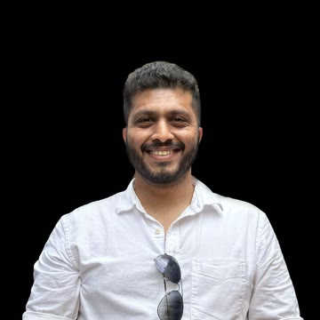
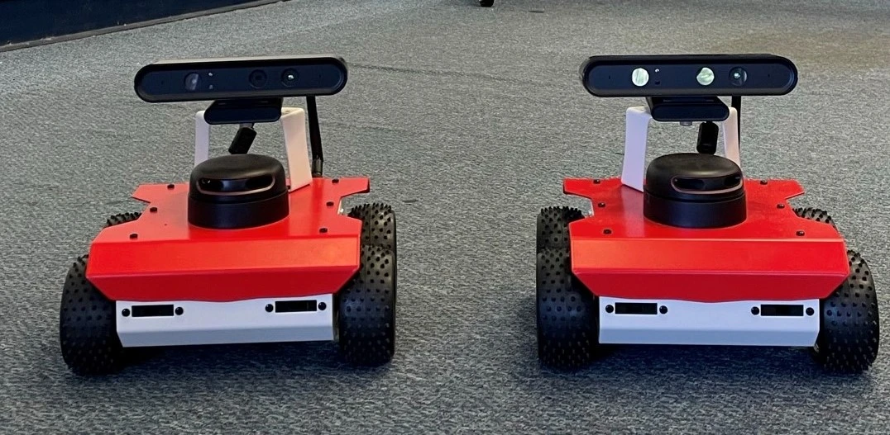
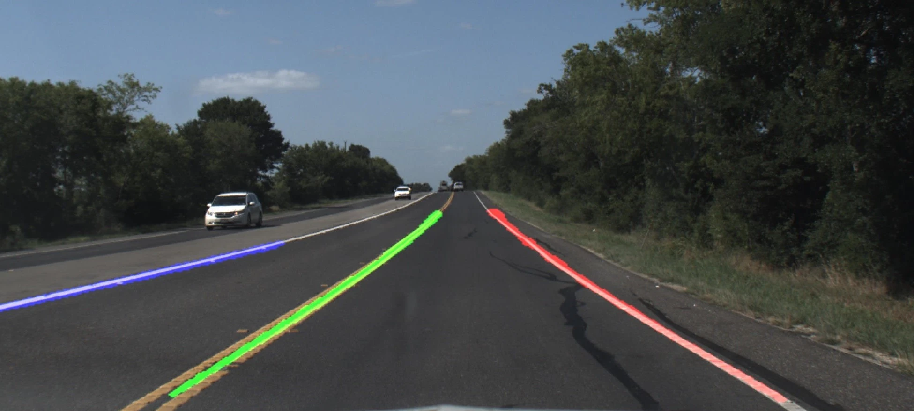
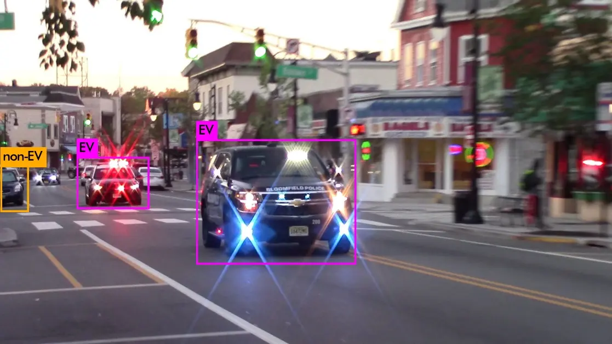
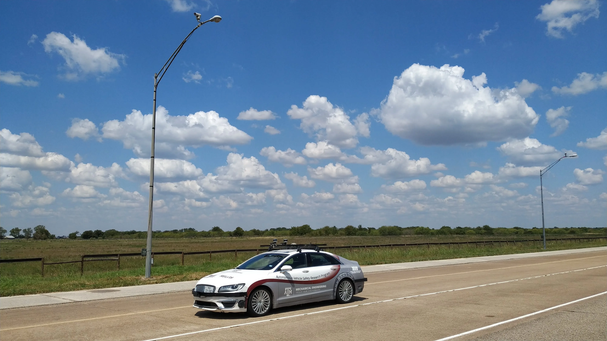
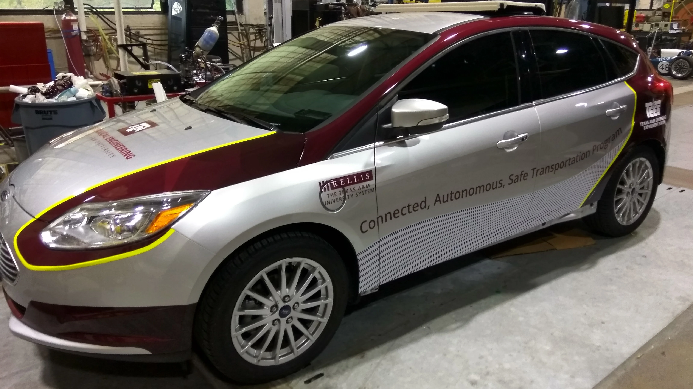

Abhishek Nayak, PhD
Senior Software Engineer · MathWorks
I'm a Senior Software Engineer in Test at MathWorks, working on sensor simulation for autonomous systems.
I hold a Ph.D. in Mechanical Engineering from Texas A&M University. My research covered motion planning, perception, and machine learning for self-driving vehicles, UAVs, and indoor robots, including multi-agent path planning, computer vision for ADAS, and infrastructure-enabled autonomy. It has produced 10+ publications and 120+ citations.

Publications
Peer-reviewed papers, a dissertation, and invited talks. Full list on Google Scholar.
A Distributed Hybrid Hardware-in-the-Loop Simulation Framework for Infrastructure Enabled Autonomy
arXiv preprint arXiv:1802.01787, 2018
arXivInvited Talks
Safe-D Webinar on Reference Machine Vision for ADAS Functions
College Station, TX
Safe-D UTC Graduate Student Leadership Development Seminar Series
College Station, TX
Texas Mobility Summit
Arlington, TX
Seminar on Intelligent Transportation Systems, NITK
Surathkal, India
Projects
Selected research and engineering projects.




Infrastructure Enabled Autonomy (IEA)
Distributed intelligence for connected AVs by offloading computation to roadside infrastructure.

Low-Cost Drive-By-Wire for Ford Focus
Low-cost drive-by-wire for a Ford Focus via Arduino Mega sensor emulation.
CV
Experience
Senior Software Engineer in Test · Autonomous Systems
The MathWorks Inc.
Natick, Massachusetts
- Testing and quality for sensor simulation in autonomous systems.
Autonomous Systems Engineer
Joulea Inc.
Atlanta, Georgia
- Led development of a fully autonomous UAS for infrastructure inspections in GPS-denied urban environments.
Graduate Research Assistant
Texas A&M Transportation Institute (TTI)
College Station, Texas
- Reference Machine Vision for ADAS functions.
- Response of Autonomous Vehicles to Emergency Response Vehicles (RAVEV).
Graduate Research Assistant
Texas A&M Engineering Experiment Station
College Station, Texas
- Heuristics and RL models for motion-constrained multi-agent vehicle routing.
- Infrastructure Enabled Autonomy (IEA) and Multi-Agent SLAM.
- SLAM in crowded urban environments using the UrbanNav Dataset.
- Low-cost drive-by-wire system for Ford Focus.
Member R&D
TVS Motor Company
Hosur, TN, India
- Developed MATLAB powertrain models and performed HIL testing & verification.
- Designed powertrain components using CAD; performance testing on TVS & BMW engines.
- Cross-functional collaboration on new product development and sensor procurement.
Education
PhD · Mechanical Engineering
Texas A&M University, College Station, TX
Dissertation: Planning and Vision Based Methods for Autonomous Vehicles
View dissertation ↗M.S. · Mechanical Engineering
Texas A&M University, College Station, TX
Thesis: Development of Vision-based Response of Autonomous Vehicles Towards Emergency Vehicles Using Infrastructure Enabled Autonomy
View thesis ↗B.Tech · Mechanical Engineering
National Institute of Technology Karnataka (NITK), India
Technical Skills
- Programming
- C++, Python, MATLAB, ROS, Git, Perforce, LaTeX
- ML / Libraries
- OpenCV, scikit-learn, XGBoost, NumPy, NetworkX
- Frameworks
- Keras, PyTorch, TensorFlow, Gazebo
- AI Tools
- Claude Code, OpenAI Codex
- Design & CAD
- CREO, SolidWorks, AutoCAD, CATIA v5
- Solvers & Tools
- CPLEX, Gurobi, Simulink, Linux